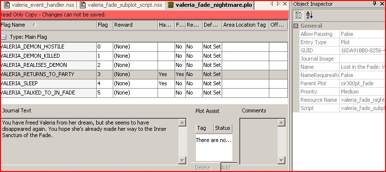

On NPC Mod Creation and Compatibility, while being the least intrusive to core game resources/ru
This article contains links to the BioWare Social Network (BSN), which is now closed.
These links should be replaced with working links where possible, and tutorials edited to remove reliance on BSN.
The purpose of this wiki is to help the community tackle one of the most important problems we face: compatibility between all our mods, in particular those mods that introduce NPC followers.
I'll share with you my approach to handling companions, based on what I have done with my mod, Quests and Legends, my experiments and experience. My goal has always been to be the least intrusive to the game core resources (meaning don't change them at all), while having the companion behave appropriately in most parts of the game.
What I'll talk about here works for Patch 1.02, but after some testing, it seems to be working fine also for those with Awakening and/or even Patch 1.03. So there's something going on with the flags probably of Patch 1.04 (they changed from these below?). This patch has always broken my game when I installed it so I don't know what the problem is there.
I've opened a discussion thread here. Please join in with your questions/comments/suggestions.
Everything you see below is done WITHOUT changing game resources. Let us begin.
Contents
- 1 Understanding the game mechanics and the module event script
- 2 What we can't and can do
- 3 What do we need?
- 4 Basic structure of the module event handler
- 5 Capturing Main Campaign Event/Flag Changes, the function check_plot_changed()
- 6 Potential Disadvantage (not certain, it might cause lag in slow systems)
- 7 Random banters
- 8 End game Slideshow
- 9 Valeria at the gates in the climax
- 10 Valeria initiates dialog at any point we feel like. Example: Killing Wynne(NOOO!!!)
- 11 Valeria's behavior when the PC is captured(while saving Anora)
- 12 Valeria's behavior at camps
- 13 Valeria has a dialog choice to remove or add her to the active party
- 14 Valeria has her own nightmare in the fade/Behavior in the Fade
- 15 Valeria first joining the party (This works for ANY follower you want to have join)
- 16 Valeria Gift Handling
Understanding the game mechanics and the module event script
We first need to discuss how the game makes use of scripts, and in particular our module event scripts (every mod has one). Everytime something happens in the game, e.g., you open or close the inventory, talents, skills, or world map gui, all the module event scripts you have installed are fire and processed (probably in the order the mods where installed) as well as the core game scripts (typically these are processed first).
So if we want to capture the behavior of our NPC follower or a major event of the game it can be done here, e.g., the PC selected or dropped the follower in the partypicker, you begin travel, or the PC just finished talking to everyone at the gates in the climax, or the game is over and we're at the slideshow.
This game structure is indeed brilliant since it allows the main game and all mods installed to handle and process the same event, say EVENT_TYPE_BEGIN_TRAVEL or EVENT_TYPE_MODULE_HANDLE_GIFT or EVENT_TYPE_WORLD_MAP_CLOSED and so forth.
What we can't and can do
The only major resource we have to change is the partypicker, otherwise our NPC's won't show up. There is a way around this(item 4 below).
If you want your NPC to interject in the middle of a major dialog, that dialog resource has to be changed (I can't see any way around this one).
The thing to keep in mind is that every time something happens in the game, certain flags from core game resources are set. We can capture when these are set and continue the process appropriately.
In this way, I'll show you how we can do the following (I've done these for my mod Valeria, WITHOUT changing any core game resources, I'll use her as a reference):
1) Valeria banters with the party randomly WITHOUT changing any original game scripts.
2) Valeria accepts specific gifts WITHOUT changing the game scripts.
3) Valeria is in a nightmare area WITHOUT changing the game scripts.
4) Valeria has a dialog option to eliminate problems with partypicker compatibility. If she doesn't show up in the partypicker she can still be picked up or sent back to camp.
5) Valeria has her own dialog after major cutscenes (where appropriate) of the game WITHOUT changing resources of the game.
6) Valeria appears in all camps (basic camp, Arl Eamon's estates, post coronation), most cutscenes from the original game and at the city gates WITHOUT changing resources of the game.
7) Valeria behaves appropriately if the PC gets captured WITHOUT changing resources of the game.
8) Slideshow post coronation WITHOUT changing the resources of the game.
Everything on this wiki is currently written in such a way that only item 2, requires further modifications to make the scripts disjoint, so we can all use it(should you choose to) without conflicts and bugs.
General Note: The dynamic stage acl_1p is used in most dialogs you see below. Remember to check the "At current location" tick box. Actor1 should be PLAYER, Actor2 should be owner.
What do we need?
Well, basic knowledge of the toolset and scripting.
a) The NPC mod event handler, say "valeria_event_handler". The companion Valeria is given the tag, "valeria_npc"
b) A plot to hold all our NPC flags, call it "valeria_npc_hire". In the handler we should have the include:
#include "plt_valeria_npc_hire"
c) We need the following basic FLAGS: PARTY_VALERIA_IN_PARTY, PARTY_VALERIA_JOINED, VALERIA_CHECK_RUNIT
These are there to handle Valeria(is she in party?, has she joined? do we need to run the script? it has to be done if we're in a camp site. you'll see what script)
d) Other flags to set when needed: VALERIA_WYNNE_KILLED, VALERIA_RESPONSE_TO_BAD, VALERIA_ENTER_FADE, VALERIA_HAS_NIGHTMARE_A, VALERIA_HAS_NIGHTMARE_B, VALERIA_HAS_NIGHTMARE_C, VALERIA_SLOTH_DEMON_ATTACKS, VALERIA_SLOTH_DEMON_DEFEATED, VALERIA_WYNNE_KILLED_AT_CULLEN, VALERIA_DEN_CAPTURED_PC_CAPTURED, VALERIA_CLI_MAIN_PC_FINISHED_SETTING_FINAL_PARTY, VALERIA_EPI_JUMP_TO_SLIDE_SHOW, VALERIA_FIGHTING_ARCHDEMON
If you drop the valeria_ prefix (FOR YOUR MOD USE A DIFFERENT PREFIX EVERYWHERE) you'll recognize some flags from the original game. Everytime those are set, we'll need to set a corresponding flag in our NPC plot, so we run things only once.
I'll tell you which plots from the main game we need depending on what we're trying to do.
Basic structure of the module event handler
//core includes here //core plot includes //valeria function, plots etc, includes #include "plt_valeria_npc_hire" //constant definitions here //function definitions here (all this part 1) void main() { object oPC = GetHero(),me=OBJECT_SELF,ohire; event ev = GetCurrentEvent(); int nEventType = GetEventType(ev); //function calls here, other important checks (part 2) //capture events switch(nEventType) { .....(part 3) } } //functions here (part 4)
For what follows, I'll break the event script into four parts for quick reference: Includes, (Main) Body, (Event) Handling, Functions
Capturing Main Campaign Event/Flag Changes, the function check_plot_changed()
The next script can be placed in the event handler, and allows us to capture and process main plot changes.
I'll do this structure a first time here
In 'includes' add:
In 'body' add:
... object oVal=UT_GetNearestObjectByTag(oPC,"valeria_npc"); ... check_plot_changed(oVal); ...
In 'functions' add:
//check if plot flags changed and act appropriately void check_plot_changed(object oVal) { object oPC=GetHero(); //if Valeria has not joined return //leave some room here for the slideshow script addition //it has to go above this check, otherwise if you don't pick her up //the script won't fire and the appropriate slides won't be shown if (!WR_GetPlotFlag(PLT_VALERIA_NPC_HIRE, PARTY_VALERIA_JOINED)) return; //every other addition to this function should be made below this check ... //here depending on which core flag changed, act appropriately ... }
We will be changing this function appropriately below, depending on what we wish to do.
Potential Disadvantage (not certain, it might cause lag in slow systems)
Now that we know how the handlers behave (from mods and the core game) we need to discuss the possible problems with this approach.
It all comes down to lag (although I don't really experience it but I put it here for completeness).
Whenever we intercept an event in Event handling, all the commands in the event handler Body will fire. That might slow some low end systems down.
Random banters
What we need
A dialog resource, say "valeria_random_banter.dlg", a script "valeria_random_banters.nss" and a plot "valeria_random_banters"
You will notice that they are done in order of appearance in the .dlg file. Of course one can change that. Meaning if Alistair is in, all his banters will go through first, then Moriggan, then Leliana ,etc, the way I had them in my file. To change that you can add a random chance to see if you initiate dialog with the party member.(see the script below, it is trivial)
valeria_random_banters.nss
First create this script. You can see what flags you need in plt_valeria_random_banters below (basically a flag for each companion you want Valeria to banter with). Alternatively, you can use the core plots to check who is in the party, but I find this more efficient, since we got full control over the script and plot resource.
//file valeria_random_banters.nss
#include "wrappers_h" #include "plt_valeria_random_banter" void main() { WR_SetPlotFlag(PLT_VALERIA_RANDOM_BANTER, ALISTAIR_IN_PARTY, FALSE); WR_SetPlotFlag(PLT_VALERIA_RANDOM_BANTER, MORRIGAN_IN_PARTY, FALSE); WR_SetPlotFlag(PLT_VALERIA_RANDOM_BANTER, LELIANA_IN_PARTY, FALSE); WR_SetPlotFlag(PLT_VALERIA_RANDOM_BANTER, WYNNE_IN_PARTY, FALSE); WR_SetPlotFlag(PLT_VALERIA_RANDOM_BANTER, ZEVRAN_IN_PARTY, FALSE); WR_SetPlotFlag(PLT_VALERIA_RANDOM_BANTER, DOG_IN_PARTY, FALSE); object [] arParty = GetPartyList(GetHero()); int i; int nSize = GetArraySize(arParty); int which=Random(nSize)+1; if(GetTag(arParty[which]) == "gen00fl_alistair") WR_SetPlotFlag(PLT_VALERIA_RANDOM_BANTER, ALISTAIR_IN_PARTY, TRUE); if(GetTag(arParty[which]) == "gen00fl_morrigan") WR_SetPlotFlag(PLT_VALERIA_RANDOM_BANTER, MORRIGAN_IN_PARTY, TRUE); if(GetTag(arParty[which]) == "gen00fl_leliana") WR_SetPlotFlag(PLT_VALERIA_RANDOM_BANTER, LELIANA_IN_PARTY, TRUE); if(GetTag(arParty[which]) == "gen00fl_wynne") WR_SetPlotFlag(PLT_VALERIA_RANDOM_BANTER, WYNNE_IN_PARTY, TRUE); if(GetTag(arParty[which]) == "gen00fl_zevran") WR_SetPlotFlag(PLT_VALERIA_RANDOM_BANTER, ZEVRAN_IN_PARTY, TRUE); if(GetTag(arParty[which]) == "gen00fl_dog") WR_SetPlotFlag(PLT_VALERIA_RANDOM_BANTER, DOG_IN_PARTY, TRUE); } //to add a random chance for the party member to banter with Valeria you can simply change ... if(GetTag(arParty[which]) == "gen00fl_dog" && Random(10)==1) WR_SetPlotFlag(PLT_VALERIA_RANDOM_BANTER, DOG_IN_PARTY, TRUE); ...
This way it won't circle through all the banters of Alistair, then Morrigan's etc, but it will skip them with some probability (90%). This means the probability of an actual banter starting is .0025*.1=.00025 (1/400=.0025).
Changes in valeria_event_handler
I'll do this structure again(last time), the rest will be the same:
In 'includes' add:
void valeria_banter();
In 'body' add:
//valeria banter: run this only if valeria is in active party if (WR_GetPlotFlag(PLT_VALERIA_NPC_HIRE, PARTY_VALERIA_IN_PARTY)) valeria_banter();
In 'functions' add:
void valeria_banter() { if(Random(400)!=1)//1 in 400 chance to start banter return; if(GetCombatState(GetHero()))//don't start if in combat return; object [] arParty = GetPartyList(GetHero()); int i; int nSize = GetArraySize(arParty); if(nSize<=2)//if only valeria and the PC no banter return; for(i=0;i<nSize;i++) if(!ClearAmbientDialogs(arParty[i])) return; object oval=UT_GetNearestObjectByTag(GetHero(),"valeria_npc"); UT_Talk(oval,GetHero(),R"valeria_random_banter.dlg"); }
Structure of the file valeria_random_banter.dlg
Everything should be set to AMBIENT. First notice where we call the random_banter_script.
{kind=link}
Now, notice how we structure all the npc's we want Valeria to banter with. First is Alistair, if he's in the party, and so forth.
{kind=link}
Second is Morrigan and so forth.
{kind=link}
Notice that once a banter starts, it will never be shown again.
{kind=link}
An example with 3 NPC's (this is a dog banter with Valeria, and Zevran, if he's in the party(notice the condition C, using the valeria_random_banters flag) he joins in).
{kind=link}
End game Slideshow
What we need
The core plot file epipt_main, contains the variable EPI_JUMP_TO_SLIDE_SHOW, which is set once you talk to the guard post-coronation at the doors and the end slideshow begins.
Add the variable VALERIA_EPI_JUMP_TO_SLIDE_SHOW in the companion VALERIA_NPC_HIRE plot, so we only do this once. We also need the dlg file with the slide dialog and pretty pictures. I use my main dialog file for this, you don't have to: valeria_npc.dlg
To implement:
In includes, add:
#include "plt_epipt_main"In the function check_plot_changed() add:
...
//valeria in the epilogue
if (WR_GetPlotFlag(PLT_EPIPT_MAIN,EPI_JUMP_TO_SLIDE_SHOW) && !WR_GetPlotFlag(PLT_VALERIA_NPC_HIRE,VALERIA_EPI_JUMP_TO_SLIDE_SHOW))
{
WR_SetPlotFlag(PLT_VALERIA_NPC_HIRE,VALERIA_EPI_JUMP_TO_SLIDE_SHOW,TRUE);
BeginSlideshow(R"valeria_npc.dlg");
}
//it has to go above this check, otherwise if you don't pick her up
//the script won't fire and the appropriate slides won't be shown
if (!WR_GetPlotFlag(PLT_VALERIA_NPC_HIRE, PARTY_VALERIA_JOINED))
return;
...Structure of the file valeria_npc.dlg
Note the check to see if the end game slides have run. I'm assuming the game ends after, so this runs only once and it's done. If another mod has the same setup (with different names for plots, flags etc) that mod script should run and continue the slideshow until the bioware credits run.
{kind=link}
Now display the appropriate text and picture (it is set on the slideshow tab) depending on which flags from the companion mod are true (depending on whether the PC helped the companion and so forth)
{kind=link}
Valeria at the gates in the climax
In the climax, you get a last chance to switch your party, where everyone parades in front of you. Well... the right behavior is to first talk to Riordan, he opens the partypicker, you may choose whom you want and then the parade begins.
Once you close the partypicker, Valeria will speak before/or after everyone else is done, so it runs smoothly. Now since many mods might skrew up the partypicker (by not including certain chars), you might have Valeria not showing up. At this stage you won't be allowed to use the dialog option anymore, to get her to join.
You could be intrusive here and force her in the partypicker, but if everyone does it we're in trouble. So I don't recommend it (I did finally implement it this way recently). But, it is best to handle partypicker compatibility by including all waypoints for all NPC's in the char_stage.
What we need
The plot clipt_main contains the important flag CLI_MAIN_PC_FINISHED_SETTING_FINAL_PARTY, and as it says, it becomes true when the PC is done setting the final party. So, create in the VALERIA_NPC_HIRE plot the flag VALERIA_CLI_MAIN_PC_FINISHED_SETTING_FINAL_PARTY, so we do this only once.
To implement:
In includes, add:
#include "plt_clipt_main"In the function check_plot_changed() add:
//valeria at the gates if (WR_GetPlotFlag(PLT_CLIPT_MAIN,CLI_MAIN_PC_FINISHED_SETTING_FINAL_PARTY) && !WR_GetPlotFlag(PLT_VALERIA_NPC_HIRE,VALERIA_CLI_MAIN_PC_FINISHED_SETTING_FINAL_PARTY)) { //the next 4 lines takes care of her, regardless of whether you added //her to the party. this way she will show up when your companions //defend the gate, choose another location of course location ValeriaLoc; object curArea=GetArea(oPC); ValeriaLoc=Location(curArea, Vector(123.24, 717.48, 0.0), -64.92); AddCommand(oVal, CommandJumpToLocation(ValeriaLoc)); WR_SetPlotFlag(PLT_VALERIA_NPC_HIRE,VALERIA_CLI_MAIN_PC_FINISHED_SETTING_FINAL_PARTY,TRUE); if(WR_GetPlotFlag(PLT_VALERIA_NPC_HIRE, PARTY_VALERIA_IN_PARTY)) { //this flag is important for the slideshow at the end WR_SetPlotFlag(PLT_VALERIA_NPC_HIRE,VALERIA_FIGHTING_ARCHDEMON,TRUE); WR_SetFollowerState(oVal, FOLLOWER_STATE_ACTIVE); SetLocalInt(oVal, CREATURE_REWARD_FLAGS, 0); //Allows the follower to gain XP } if(!WR_GetPlotFlag(PLT_VALERIA_NPC_HIRE, PARTY_VALERIA_IN_PARTY)) { WR_SetPlotFlag(PLT_VALERIA_NPC_HIRE,VALERIA_FIGHTING_ARCHDEMON,FALSE); WR_SetFollowerState(oVal, FOLLOWER_STATE_AVAILABLE); } SetObjectActive(oVal,1); UT_Talk(oVal,oPC); }
Changing the Valeria dialog appropriately: valeria_npc.dlg
Use the flag here, and depending on whether the PC added Valeria to the party, follow a different path.
{kind=link}
She complains if she wasn't selected to fight the archdemon, and she has every right.
{kind=link}
Valeria initiates dialog at any point we feel like. Example: Killing Wynne(NOOO!!!)
I love this char, no-one should ever kill her, but if they do the char should lose approval unless it is that b... Morrigan, or Zevran etc.
What we need
Wynne could die in two places in the Circle: when you first pick her up or at Cullen.
The plot CIR000PT_MAIN contains the two important flags for this: WYNNE_KILLED and WYNNE_KILLED_AT_CULLEN. So, create in the VALERIA_NPC_HIRE plot the flags VALERIA_WYNNE_KILLED and VALERIA_WYNNE_KILLED_AT_CULLEN, so we do this only once.
To implement:
In includes, add:
#include "plt_cir000pt_main"In the function check_plot_changed() add:
//fighting wynne if (WR_GetPlotFlag(PLT_CIR000PT_MAIN,WYNNE_KILLED) && !WR_GetPlotFlag(PLT_VALERIA_NPC_HIRE,VALERIA_WYNNE_KILLED)) { if(WR_GetPlotFlag(PLT_VALERIA_NPC_HIRE, PARTY_VALERIA_IN_PARTY)) { WR_SetPlotFlag(PLT_VALERIA_NPC_HIRE,VALERIA_RESPONSE_TO_BAD,TRUE); AdjustFollowerApproval(oVal,-10,TRUE); UT_Talk(oVal,oPC); valeria_approval(); } WR_SetPlotFlag(PLT_VALERIA_NPC_HIRE,VALERIA_WYNNE_KILLED,TRUE); } //fighting wynne if (WR_GetPlotFlag(PLT_CIR000PT_MAIN,WYNNE_KILLED_AT_CULLEN) && !WR_GetPlotFlag(PLT_VALERIA_NPC_HIRE,VALERIA_WYNNE_KILLED_AT_CULLEN)) { if(WR_GetPlotFlag(PLT_VALERIA_NPC_HIRE, PARTY_VALERIA_IN_PARTY)) { WR_SetPlotFlag(PLT_VALERIA_NPC_HIRE,VALERIA_RESPONSE_TO_BAD,TRUE); AdjustFollowerApproval(oVal,-10,TRUE); UT_Talk(oVal,oPC); valeria_approval(); } WR_SetPlotFlag(PLT_VALERIA_NPC_HIRE,VALERIA_WYNNE_KILLED_AT_CULLEN,TRUE); }
The flag: VALERIA_RESPONSE_TO_BAD can be used in valeria_npc.dlg as shown below. The function valeria_approval() is explained in the gift handling section.
Changes in valeria_npc.dlg
Use the flag VALERIA_RESPONSE_TO_BAD, first to enter the bad reaction node in the dialog.
{kind=link}
Reset the flag
{kind=link}
Depending on which situation we're in display the appropriate node (once per game). Showing what happens when Wynne is killed when first meeting her. But you should never do that...
{kind=link}
Valeria's behavior when the PC is captured(while saving Anora)
While saving Anora, you might end up fighting Sir Cauthrien (or just surrender). If you lose you get captured and sent to prison. Valeria must be removed from the party otherwise she'll still be following the PC around. She cannot be chosen to go save the PC without changing the game resources, unless you capture it after the initial selection is done. Haven't done it but I'm guessing it could be done if you find the right flag.
What we need
The plot DENPT_CAPTURED contains the important flag for this: DEN_CAPTURED_PC_CAPTURED. So, create in the VALERIA_NPC_HIRE plot the flag VALERIA_DEN_CAPTURED_PC_CAPTURED, so we do this only once.
To implement:
In includes, add:
#include "plt_denpt_captured"In the function check_plot_changed() add:
//pc captured by cauthrien if (WR_GetPlotFlag(PLT_DENPT_CAPTURED,DEN_CAPTURED_PC_CAPTURED) && !WR_GetPlotFlag(PLT_VALERIA_NPC_HIRE,VALERIA_DEN_CAPTURED_PC_CAPTURED)) { WR_SetPlotFlag(PLT_VALERIA_NPC_HIRE,VALERIA_DEN_CAPTURED_PC_CAPTURED,TRUE); if(WR_GetPlotFlag(PLT_VALERIA_NPC_HIRE, PARTY_VALERIA_IN_PARTY)) { WR_SetFollowerState(oVal, FOLLOWER_STATE_AVAILABLE); } WR_SetPlotFlag(PLT_VALERIA_NPC_HIRE, PARTY_VALERIA_IN_PARTY, FALSE); }
Valeria's behavior at camps
There are four main areas, where upon entering, Valeria has to behave accordingly, without changing the game scripts. These are: the usual camp(tag=cam100ar_camp_plains, the second time you enter it, it's the same area thereafter), eamon's estate (tag=den211ar_arl_eamon_estate_1), eamon's castle at redcliffe (tag=cli300ar_redcliffe_castle), and post coronation (tag=epi300ar_post_coronation). When you test this: To make sure these changes in your companion's behavior work, you have to go to a save game just before you first pick them up, otherwise the flags won't be set. See the joining script for Valeria.
What we need
First add the flag VALERIA_CHECK_RUNIT in the companion plot VALERIA_NPC_HIRE. This one will allow us to know when to run the script to remove Valeria from the active party and move her to her right place, when we enter any of theses areas.
We also need a function in the valeria_event_handler, call it, Handle_Valeria_In_Camp.
To implement:
In includes, add:
In the body, add:
...
object curArea=GetArea(oPC);
object oArea = GetObjectByTag("cam100ar_camp_plains");
//valeria in camp
object oVal=UT_GetNearestObjectByTag(oPC,"valeria_npc");
if (GetTag(curArea)!="cam100ar_camp_plains" && GetTag(curArea)!="den211ar_arl_eamon_estate_1" && GetTag(curArea)!="cli300ar_redcliffe_castle" && GetTag(curArea)!="epi300ar_post_coronation" && WR_GetPlotFlag(PLT_VALERIA_NPC_HIRE, PARTY_VALERIA_JOINED))
WR_SetPlotFlag(PLT_VALERIA_NPC_HIRE, VALERIA_CHECK_RUNIT,TRUE);
int runit=WR_GetPlotFlag(PLT_VALERIA_NPC_HIRE, VALERIA_CHECK_RUNIT);
if (runit && (GetTag(curArea)=="cam100ar_camp_plains" || GetTag(curArea)=="den211ar_arl_eamon_estate_1" || GetTag(curArea)=="cli300ar_redcliffe_castle" || GetTag(curArea)=="epi300ar_post_coronation") && WR_GetPlotFlag(PLT_VALERIA_NPC_HIRE, PARTY_VALERIA_JOINED))
Handle_Valeria_In_Camp(curArea);
...Module Events we need to capture
The module events: EVENT_TYPE_WORLD_MAP_CLOSED, EVENT_TYPE_PARTYMEMBER_ADDED, EVENT_TYPE_MODULE_GETCHARSTAGE(change the partypicker), EVENT_TYPE_PARTYMEMBER_DROPPED, are important for handling Valeria's behavior. The checks and ifs you see below essentially capture all the possible actions by the PC and make Valeria act accordingly, e.g., go open the worldmap in camp(the partypicker pops up), if canceled the map, put valeria back in place and out of the party, and so forth. These things are done automatically by core game scripts (like camp_functions_h) and mods that modify them. We don't change anything with this approach.
Begin. In Event Handling add:
... //world map was closed and valeria was either chosen or not from the partypicker, she has to be taken care of since we're still in camp or we moved to another area. case EVENT_TYPE_WORLD_MAP_CLOSED: { int nCloseType = GetEventInteger(ev, 0); object oVal=UT_GetNearestObjectByTag(oPC,"valeria_npc"); WR_SetPlotFlag(PLT_VALERIA_NPC_HIRE, VALERIA_CHECK_RUNIT,TRUE); if (GetTag(curArea)==GetTag(oArea) && WR_GetPlotFlag(PLT_VALERIA_NPC_HIRE, PARTY_VALERIA_JOINED) && WR_GetPlotFlag(PLT_VALERIA_NPC_HIRE, PARTY_VALERIA_IN_PARTY)) { if (!nCloseType)//0 canceled, 1 means selected a pin { SetFollowerState(oVal, FOLLOWER_STATE_AVAILABLE); WR_SetPlotFlag(PLT_VALERIA_NPC_HIRE, PARTY_VALERIA_IN_PARTY, FALSE); WR_SetPlotFlag(PLT_VALERIA_NPC_HIRE, VALERIA_CHECK_RUNIT,TRUE); } else { //don't run the camp script for valeria now, set runit=0; SetLocalInt(oVal, CREATURE_REWARD_FLAGS, 0); //Allows the follower to gain XP SetLocalInt(oVal, AMBIENT_SYSTEM_STATE, 0); SetFollowerState(oVal, FOLLOWER_STATE_ACTIVE); //Adds follower to the active party AddCommand(oVal, CommandJumpToLocation(GetLocation(GetHero()))); //Ensures follower appears at PC's location. WR_SetPlotFlag(PLT_VALERIA_NPC_HIRE, VALERIA_CHECK_RUNIT,FALSE); } } break; } //valeria was chosen from the partypicker case EVENT_TYPE_PARTYMEMBER_ADDED: { object oFollower = GetEventObject(ev, 0); if (GetTag(oFollower) == "valeria_npc") { SetImmortal(oFollower,0); SetLocalInt(oFollower, CREATURE_REWARD_FLAGS, 0); //Allows the follower to gain XP SetLocalInt(oFollower, AMBIENT_SYSTEM_STATE, 0); SetFollowerState(oFollower, FOLLOWER_STATE_ACTIVE); //Adds follower to the active party SetObjectActive(oFollower,1); AddCommand(oFollower, CommandJumpToLocation(GetLocation(GetHero()))); //Ensures follower appears at PC's location. WR_SetPlotFlag(PLT_VALERIA_NPC_HIRE, PARTY_VALERIA_IN_PARTY, TRUE); } break; } //here we have dropped valeria from the party, using the partypicker case EVENT_TYPE_PARTYMEMBER_DROPPED: { object oFollower = GetEventObject(ev, 0); if (GetTag(oFollower) == "valeria_npc") { SetImmortal(oFollower,1); SetFollowerState(oFollower, FOLLOWER_STATE_AVAILABLE); //Adds follower to the active party WR_SetPlotFlag(PLT_VALERIA_NPC_HIRE, PARTY_VALERIA_IN_PARTY, FALSE); } break; } //here we change the partypicker to valeria_char_stage case EVENT_TYPE_MODULE_GETCHARSTAGE: { SetPartyPickerStage("valeria_char_stage", "partypicker"); break; }
The Handle_Valeria_In_Camp script
Here's the function to take care of Valeria's behavior appropriately. Use different locations for your companions of course.
void Handle_Valeria_In_Camp(object curArea) { object oPC=GetHero(); //spawn valeria in camp if she's joined object oVal=UT_GetNearestObjectByTag(oPC,"valeria_npc"); location ValeriaLoc; if(GetTag(curArea)=="cam100ar_camp_plains") ValeriaLoc=Location(curArea, Vector(135.85, 123.18, -0.08), -71.33); if(GetTag(curArea)=="den211ar_arl_eamon_estate_1") ValeriaLoc=Location(curArea, Vector(28.1, 4.75, 0.0), 176.33); if(GetTag(curArea)=="cli300ar_redcliffe_castle") ValeriaLoc=Location(curArea, Vector(2.56,-14.84, 0.0), -130.38); if(GetTag(curArea)=="epi300ar_post_coronation") ValeriaLoc=Location(curArea, Vector(15.73,4.3, 0.0), 13.16); if(!IsObjectValid(oVal)) { oVal=CreateObject(OBJECT_TYPE_CREATURE, R"valeria_npc.utc", ValeriaLoc); } else { SetObjectActive(oVal,1); AddCommand(oVal, CommandJumpToLocation(ValeriaLoc)); } SetFollowerState(oVal, FOLLOWER_STATE_AVAILABLE); if(GetTag(curArea)=="cam100ar_camp_plains") Ambient_Start(oVal, AMBIENT_SYSTEM_ENABLED, AMBIENT_MOVE_NONE, AMBIENT_MOVE_PREFIX_NONE, 70, AMBIENT_ANIM_FREQ_ORDERED); if(GetTag(curArea)=="den211ar_arl_eamon_estate_1" ||GetTag(curArea)=="cli300ar_redcliffe_castle" || GetTag(curArea)=="epi300ar_post_coronation") Ambient_Start(oVal, AMBIENT_SYSTEM_ENABLED, AMBIENT_MOVE_NONE, AMBIENT_MOVE_PREFIX_NONE, 56, AMBIENT_ANIM_FREQ_ORDERED); WR_SetPlotFlag(PLT_VALERIA_NPC_HIRE, PARTY_VALERIA_IN_PARTY,FALSE); WR_SetPlotFlag(PLT_VALERIA_NPC_HIRE, VALERIA_CHECK_RUNIT,FALSE); }
Valeria has a dialog choice to remove or add her to the active party
</rant on> The partypicker is the only resource what you really have to change in order to make your companion show up. No way around this. However, as more mods come out, disregarding what others have done, and changing game resources at will and without knowing what they're doing very often, installing more than one mod messes the whole game up. </rant off>
With that pleasant thought in mind, here's an option to make all our companions "compatible", in the sense that even if they don't show in the partypicker, you can still get them, or sent them back to camp.
What we need
In your npc dialog, say valeria_npc.dlg, we build an option as you see in the pretty pictures. You first notice that this option is available only if we haven't been through the last partypicker choosing at the gates in the climax (when we talk to Riordan).
{kind=link}
Notice how we call the script valeria_come_with_me, to have her join the active party.
{kind=link}
Notice how we call the script valeria_go_back_to_camp, to sent her back to camp(remove from active party).
{kind=link}
The come hither script
#include "utility_h" #include "plt_valeria_npc_hire" void main() { object me=OBJECT_SELF; SetImmortal(me,0); SetLocalInt(me, CREATURE_REWARD_FLAGS, 0); SetLocalInt(me, AMBIENT_SYSTEM_STATE, 0); SetFollowerState(me, FOLLOWER_STATE_ACTIVE); SetObjectActive(me,1); AddCommand(me, CommandJumpToLocation(GetLocation(GetHero()))); //Ensures follower appears at PC's location. WR_SetPlotFlag(PLT_VALERIA_NPC_HIRE, PARTY_VALERIA_IN_PARTY, TRUE); }
The go back to camp script
Notice the checks to see if we are in one of the camps. You should have different locations for your companions of course.
#include "utility_h" #include "sys_ambient_h" #include "plt_valeria_npc_hire" void main() { object me=OBJECT_SELF; object curArea=GetArea(GetHero()); SetFollowerState(me, FOLLOWER_STATE_AVAILABLE); WR_SetPlotFlag(PLT_VALERIA_NPC_HIRE, PARTY_VALERIA_IN_PARTY,FALSE); if(GetTag(curArea)=="cam100ar_camp_plains" || GetTag(curArea)=="den211ar_arl_eamon_estate_1" ||GetTag(curArea)=="cli300ar_redcliffe_castle") { location ValeriaLoc; if(GetTag(curArea)=="cam100ar_camp_plains") ValeriaLoc=Location(curArea, Vector(135.85, 123.18, -0.08), -71.33); if(GetTag(curArea)=="den211ar_arl_eamon_estate_1") ValeriaLoc=Location(curArea, Vector(28.1, 4.75, 0.0), 176.33); if(GetTag(curArea)=="cli300ar_redcliffe_castle") ValeriaLoc=Location(curArea, Vector(2.56,-14.84, 0.0), -130.38); SetObjectActive(me,1); AddCommand(me, CommandJumpToLocation(ValeriaLoc)); if(GetTag(curArea)=="cam100ar_camp_plains") Ambient_Start(me, AMBIENT_SYSTEM_ENABLED, AMBIENT_MOVE_NONE, AMBIENT_MOVE_PREFIX_NONE, 70, AMBIENT_ANIM_FREQ_ORDERED); if(GetTag(curArea)=="den211ar_arl_eamon_estate_1" ||GetTag(curArea)=="cli300ar_redcliffe_castle") Ambient_Start(me, AMBIENT_SYSTEM_ENABLED, AMBIENT_MOVE_NONE, AMBIENT_MOVE_PREFIX_NONE, 56, AMBIENT_ANIM_FREQ_ORDERED); } else { SetObjectActive(me,0); } SetImmortal(me,1); }
Valeria has her own nightmare in the fade/Behavior in the Fade
This tutorial and the gift handling are the hardest. There is so much stuff to do for this, I hope I don't forget anything. If someone tries it sent me message, tell me it worked. Otherwise I forgot something to tell you here probably. So let's take it slow.
What we need
When the PC first enters the fade, there are several important flags and module variables set automatically by the game. The plot resource of interest is CIR300PT_FADE and the flag ENTER_FADE, signals the PC is in Weisshaupt (where he/she meets the fake Duncan). This flag needs to be captured, so build the flag VALERIA_ENTER_FADE, into the NPC plot VALERIA_NPC_HIRE, in order to do this only once. There are three possible nightmares, each for each companion the PC had. We'll make it so our companion goes into the first available one.
We also need to capture the following flags from CIR300PT_FADE: SLOTH_DEMON_ATTACKS (that's the demon that put you to sleep, you fight him at the end of the fade), and SLOTH_DEMON_DEFEATED (when the demon is killed Valeria has to come back to the party, if she didn't help fight the demon).
So create in the plot VALERIA_NPC_HIRE the flags VALERIA_SLOTH_DEMON_ATTACKS, VALERIA_SLOTH_DEMON_DEFEATED (these are so we do it once), as well as, the following important flags for Valeria: VALERIA_HAS_NIGHTMARE_A, VALERIA_HAS_NIGHTMARE_B, VALERIA_HAS_NIGHTMARE_C (these three are to see to which area from the 3 possible Valeria is in)
First add this in includes:
... #include "plt_valeria_fade_nightmare" #include "plt_cir000pt_main" #include "plt_cir300pt_fade" ...
Changes in the function check_plot_changed
Add the following lines in check_plot_changed, to capture important events in the PC's travels in the fade:
//enter the fade, remove valeria from party if (WR_GetPlotFlag(PLT_CIR300PT_FADE,ENTER_FADE) && !WR_GetPlotFlag(PLT_VALERIA_NPC_HIRE,VALERIA_ENTER_FADE)) { WR_SetPlotFlag(PLT_VALERIA_NPC_HIRE,VALERIA_ENTER_FADE,TRUE); //if she was in the party when the demon put you to sleep, she needs //to have a nightmare area for her if(WR_GetPlotFlag(PLT_VALERIA_NPC_HIRE, PARTY_VALERIA_IN_PARTY)) { SetFollowerState(oVal, FOLLOWER_STATE_AVAILABLE); //Adds follower to the active party //this flag is important, it tells us valeria has indeed a nightmare //and will be used in her dialogs(see below) WR_SetPlotFlag(PLT_VALERIA_FADE_NIGHTMARE,VALERIA_SLEEP,TRUE); //which area to put valeria in. these module variables are set when //first entering the fade and are positive if a companion nightmare //area will have an actual companion in it (imagine going there with //only 3 in the party, one area should be inactive, the value -1 //so circle through all 3 and see which one is the first available //the core game scripts would put the other companions already in //one of these, so we just find any available. //so if say Rory(Ser Gilmore) and Valeria are in party, these scripts //are disjoint and they would both behave appropriately int fol1=GetLocalInt(GetModule(),CIR_FADE_FOLLOWER_1); int fol2=GetLocalInt(GetModule(),CIR_FADE_FOLLOWER_2); int fol3=GetLocalInt(GetModule(),CIR_FADE_FOLLOWER_3); if(fol1<1) WR_SetPlotFlag(PLT_VALERIA_NPC_HIRE,VALERIA_HAS_NIGHTMARE_A,TRUE); else if(fol2<1) WR_SetPlotFlag(PLT_VALERIA_NPC_HIRE,VALERIA_HAS_NIGHTMARE_B,TRUE); else if(fol3<1) WR_SetPlotFlag(PLT_VALERIA_NPC_HIRE,VALERIA_HAS_NIGHTMARE_C,TRUE); } WR_SetPlotFlag(PLT_VALERIA_NPC_HIRE, PARTY_VALERIA_IN_PARTY, FALSE);//not in party anymore anyways } //fighting the demon in the fade //after the PC makes it to the inner sanctum, they get to talk to the //demon and the battle begins. This is captured here. Notice that if //we have talked to Valeria in the fade, she should be brought back //to help in battle. if (WR_GetPlotFlag(PLT_CIR300PT_FADE,SLOTH_DEMON_ATTACKS) && !WR_GetPlotFlag(PLT_VALERIA_NPC_HIRE,VALERIA_SLOTH_DEMON_ATTACKS) && WR_GetPlotFlag(PLT_VALERIA_FADE_NIGHTMARE, VALERIA_TALKED_TO_IN_FADE)) { WR_SetFollowerState(oVal, FOLLOWER_STATE_ACTIVE); SetImmortal(oVal,0); WR_SetPlotFlag(PLT_VALERIA_NPC_HIRE,VALERIA_SLOTH_DEMON_ATTACKS,TRUE); WR_SetPlotFlag(PLT_VALERIA_NPC_HIRE, PARTY_VALERIA_IN_PARTY,TRUE); SetLocalInt(oVal, CREATURE_REWARD_FLAGS, 0); //Allows the follower to gain XP SetLocalInt(oVal, AMBIENT_SYSTEM_STATE, 0); SetObjectActive(oVal,1); AddCommand(oVal, CommandJumpToLocation(GetLocation(GetHero()))); //Ensures follower appears at PC's location. } //demon in the fade defeated, this is captured here //if valeria was with the PC when he first entered the fade //she should come back to him regardless of him talking to her in the fade if (WR_GetPlotFlag(PLT_CIR300PT_FADE,SLOTH_DEMON_DEFEATED) && !WR_GetPlotFlag(PLT_VALERIA_NPC_HIRE,VALERIA_SLOTH_DEMON_DEFEATED) && WR_GetPlotFlag(PLT_VALERIA_NPC_HIRE,VALERIA_SLEEP)) { WR_SetFollowerState(oVal, FOLLOWER_STATE_ACTIVE); WR_SetPlotFlag(PLT_VALERIA_NPC_HIRE, PARTY_VALERIA_IN_PARTY,TRUE); WR_SetPlotFlag(PLT_VALERIA_NPC_HIRE,VALERIA_SLOTH_DEMON_DEFEATED,TRUE); SetLocalInt(oVal, CREATURE_REWARD_FLAGS, 0); //Allows the follower to gain XP SetLocalInt(oVal, AMBIENT_SYSTEM_STATE, 0); SetObjectActive(oVal,1); AddCommand(oVal, CommandJumpToLocation(GetLocation(GetHero()))); //Ensures follower appears at PC's location. }
The VALERIA_FADE_NIGHTMARE plot, it's journal and script
Another important point, is that the game uses another plot for each companion. So we need to create the plot VALERIA_FADE_NIGHTMARE that will contain similar variables to the corresponding game plot for a companion. Name them: VALERIA_DEMON_HOSTILE, VALERIA_DEMON_KILLED, VALERIA_REALISES_DEMON, VALERIA_RETURNS_TO_PARTY, VALERIA_SLEEP (these have to do with her behavior when we meet her in her nightmare), VALERIA_TALKED_TO_IN_FADE (if we went to Valeria's nightmare and talked her out of it) .
Here is now the script for the plot VALERIA_FADE_NIGHTMARE (in the object inspector for the plot just change the standard plot_core script to this one). I call it: valeria_fade_subplot_script.nss
#include "utility_h" #include "wrappers_h" #include "plot_h" #include "cir_constants_h" #include "cir_functions_h" #include "plt_valeria_fade_nightmare" //this will look weird to you, but it shouldn't really(we're in the //script not the definitions of the flags). when you see below you'll //notice that certain flags from this plot are not set here, they are //handled by global_plot_operations //(just setting the flags to TRUE or FALSE nothing more) #include "plt_valeria_npc_hire" #include "plt_cir300pt_fade" int StartingConditional() { event eParms = GetCurrentEvent(); // Contains all input parameters int nType = GetEventType(eParms); // GET or SET call string strPlot = GetEventString(eParms, 0); // Plot GUID int nFlag = GetEventInteger(eParms, 1); // The bit flag # being affected object oParty = GetEventCreator(eParms); // The owner of the plot table for this script object oConversationOwner = GetEventObject(eParms, 0); // Owner on the conversation, if any int nResult = FALSE; // used to return value for DEFINED GET events object oPC = GetHero(); object oTarg; object oVal = UT_GetNearestCreatureByTag(oPC,"valeria_npc"); plot_GlobalPlotHandler(eParms); // any global plot operations, including debug info if(nType == EVENT_TYPE_SET_PLOT) // actions -> normal flags only { int nValue = GetEventInteger(eParms, 2); // On SET call, the value about to be written (on a normal SET that should be '1', and on a 'clear' it should be '0') int nOldValue = GetEventInteger(eParms, 3); // On SET call, the current flag value (can be either 1 or 0 regardless if it's a set or clear event) // IMPORTANT: The flag value on a SET event is set only AFTER this script finishes running! switch(nFlag) { case VALERIA_DEMON_HOSTILE: { //when we speak to her, we might manage to make her realize she's in a nightmare, or not, //if she realizes she'll help battling the demon pretending to be her sister if(WR_GetPlotFlag(PLT_VALERIA_FADE_NIGHTMARE, VALERIA_REALISES_DEMON) == TRUE) { //Set to friendly SetGroupId(oVal, GROUP_FRIENDLY); WR_SetFollowerState(oVal, FOLLOWER_STATE_ACTIVE); } else { //If Valeria hasn't realised it is a demon set to neutral SetGroupId(oVal, GROUP_NEUTRAL); } //Make Victoria into Incubus //in the nightmare area I've created, 19741 is Victoria, Valeria's dead sister, // and 19742 (initially inactive) is the Demon holding her UT_TeamAppears(19741, FALSE); UT_TeamAppears(19742, TRUE); UT_TeamGoesHostile(19742, TRUE); break; } case VALERIA_RETURNS_TO_PARTY: { WR_SetObjectActive(oVal, FALSE, BASE_ANIMATION_SLEEP, FADE_VFX_TELEPORT); if(WR_GetPlotFlag(PLT_VALERIA_FADE_NIGHTMARE, VALERIA_REALISES_DEMON) == TRUE) { //Set to friendly WR_SetFollowerState(oVal, FOLLOWER_STATE_UNAVAILABLE); // WR_SetFollowerState(oVal, FOLLOWER_STATE_ACTIVE); // WR_SetPlotFlag(PLT_VALERIA_FADE_NIGHTMARE,VALERIA_SLEEP,FALSE); // WR_SetPlotFlag(PLT_VALERIA_NPC_HIRE, PARTY_VALERIA_IN_PARTY,TRUE); } //the nightmare variables are set in the function check_plot_changed(see above), //what we are setting here, are the plot variables that will change the //actual area in the fade map to done. you can see those variables below if (WR_GetPlotFlag(PLT_VALERIA_NPC_HIRE,VALERIA_HAS_NIGHTMARE_A)) { WR_SetPlotFlag(PLT_CIR300PT_FADE_PORTAL, FADE_PORTAL_GREEN_1_COMPLETE, TRUE, TRUE); } else if (WR_GetPlotFlag(PLT_VALERIA_NPC_HIRE,VALERIA_HAS_NIGHTMARE_B)) { WR_SetPlotFlag(PLT_CIR300PT_FADE_PORTAL, FADE_PORTAL_GREEN_2_COMPLETE, TRUE, TRUE); } else if (WR_GetPlotFlag(PLT_VALERIA_NPC_HIRE,VALERIA_HAS_NIGHTMARE_C)) { WR_SetPlotFlag(PLT_CIR300PT_FADE_PORTAL, FADE_PORTAL_GREEN_3_COMPLETE, TRUE, TRUE); } break; } } } else // EVENT_TYPE_GET_PLOT -> defined conditions only { switch(nFlag) { } } plot_OutputDefinedFlag(eParms, nResult); return nResult; }
Forgot(told ye I would). Here's how to add the right journal entries, and also, how to define the plot properties (see the object inspector on the right). Notice this plot has to be a subplot to cir300pt_fade so what we get the correct Journal behavior as well (like the game does). Notice when the quest is done and we set this as the final entry (Final=Yes).

{kind=link}
{kind=link}
Taking care of Valeria's dialog in her nightmare area
I am using a stage for this, with the appropriate options set in the dialog. I won't go into it. You can do that.
The flags in VALERIA_FADE_NIGHTMARE are important here. Notice the check for the SLEEP flag here. Also notice we only run this dialog once.
{kind=link}
Now you can do whatever you want, but I find this approach best. Notice the first of two options, checks to see if the PC has 3 ranks in persuasion. If that happens, Valeria snaps out of it right away.
{kind=link}
Now notice how the REALISES_DEMON variable is set, so that Valeria will help in the battle with the demon acting as her sister.
{kind=link}
Notice how we set the flag VALERIA_DEMON_HOSTILE in the plot valeria_fade_nightmare (see the script). It will initiate the battle.
{kind=link}
Notice that if she's a mage she snaps out of it (second way). Notice how this links back up so we set the flag VALERIA_DEMON_HOSTILE in the plot valeria_fade_nightmare again.
{kind=link}
Otherwise, you fight the demon alone. Notice how this links back so we set the flag VALERIA_DEMON_HOSTILE in the plot valeria_fade_nightmare again as we did above.
{kind=link}
Set the VALERIA_TALKED_TO_IN_THE_FADE flag (so she'll help in the final demon battle). We show this option only once per game.
{kind=link}
Set the VALERIA_RETURNS_TO_PARTY flag (removes Valeria from party). See the valeria_fade_nightmare plot script.
{kind=link}
Valeria Nightmare Area specifics
Create a duplicate copy of a game companion nightmare area resource. I call it valeria_fade_nightmare(.are). Mine is using the predefined area layout lak526d for this (similar to Morrigan's nightmare I think, I probably duplicated her nightmare area and edited it). You need to do this so you'll have the fade pedistal in the area and atmosphere sounds, setting etc. You can remove some of the waypoints etc and edit it to what you want the nightmare to be. That's up to you can't help you there. Make sure the entry waypoint is tagged "start".
Set the script of the area to "valeria_nightmare". It's a copy of the core game resource tailored to what we want to do. First here's the area script.
#include "utility_h" #include "party_h" #include "plt_valeria_fade_nightmare" void main() { event evEvent = GetCurrentEvent(); // Event int nEventType = GetEventType(evEvent); // Event Type object oEventCreator = GetEventCreator(evEvent); // Event Creator object oPC = GetHero(); object oParty = GetParty( oPC ); object oThis = OBJECT_SELF; int bEventHandled = FALSE; object oTarg, oFollower; //I pass handling to the standard script first here for things like // polymorphing handling (rat, golem etc), and standard behavior. HandleEvent( evEvent, R"cir000ar_fade_core.ncs" ); switch ( nEventType )//we capture the following events though { case EVENT_TYPE_AREALOAD_PRELOADEXIT: { // When: for things you want to happen while the load screen is // still up, things like moving creatures around. int nIndex; int nArraySize, nSpiritArraySize; int bArcaneFormActive; int bBurningFormActive; int bGolemFormActive; int bMouseFormActive; int bSpiritFormActive; int bPCHasArcaneForm; int bPCHasBurningForm; int bPCHasGolemForm; int bPCHasMouseForm; int bPCHasSpiritForm; object [] arFireBases, arSpiritBases; nArraySize = GetArraySize( arFireBases ); // VALERIA'S NIGHTMARE if ( GetTag(oThis) == "valeria_fade_nightmare" && WR_GetPlotFlag(PLT_VALERIA_FADE_NIGHTMARE,VALERIA_RETURNS_TO_PARTY) == FALSE ) { oFollower = Party_GetFollowerByTag("valeria_npc"); WR_SetObjectActive(oFollower, TRUE); UT_LocalJump(oFollower,"valeria_spot"); //this is the waypoint Valeria appears in the area, so move her there(see pictures) } break; } case EVENT_TYPE_TEAM_DESTROYED: { int nTeamID = GetEventInteger(evEvent, 0); // Team ID if(nTeamID==19742) //capture when the demon dies and talk to Valeria { WR_SetPlotFlag(PLT_VALERIA_FADE_NIGHTMARE,VALERIA_DEMON_KILLED,TRUE); oFollower = Party_GetFollowerByTag("valeria_npc"); UT_Talk(oFollower,oPC); } break; } } }
My setup in the area. I don't know if you can see the inactive (red box) and active (yellow) Victoria versions.
{kind=link}
The pedestal.
{kind=link}
So you think you're done, think again. Changes in Event Handling
We finally need to capture when the PC selects the right nightmare area (the one area that contains Valeria, it will be loaded appropriately)
Add this in the Event Handling part of the module event script:
case EVENT_TYPE_BEGIN_TRAVEL://EVENT_TYPE_WORLD_MAP_USED: { string sSource = GetEventString(ev, 0); // the area tag the player is travelling from string sTarget = GetEventString(ev, 1); // the area tag the player is travelling to string sWPOverride = GetEventString(ev, 2); //we pick to sent the PC clicking to the right nightmare area here //it's funny actually, all tags for the core game nightmare companion //map pins are given the same value "Fade_Follower". What distinguishes //them is sWPOverride(thank god for that otherwise we'd be in trouble) //if I remember correctly, the companion nightmare areas in the fade //map, go 1,2,3 counterclockwise starting from the one on the left //valeria_fade_nightmare is the name of the area for Valeria's //nightmare, start is the waypoint tag if(sWPOverride=="1" && sTarget=="Fade_Follower" && WR_GetPlotFlag(PLT_VALERIA_NPC_HIRE,VALERIA_HAS_NIGHTMARE_A)) DoAreaTransition("valeria_fade_nightmare","start"); if(sWPOverride=="2" && sTarget=="Fade_Follower" && WR_GetPlotFlag(PLT_VALERIA_NPC_HIRE,VALERIA_HAS_NIGHTMARE_B)) DoAreaTransition("valeria_fade_nightmare","start"); if(sWPOverride=="3" && sTarget=="Fade_Follower" && WR_GetPlotFlag(PLT_VALERIA_NPC_HIRE,VALERIA_HAS_NIGHTMARE_C)) DoAreaTransition("valeria_fade_nightmare","start"); break; }
Phew, I hope, I didn't forget anything.
Valeria first joining the party (This works for ANY follower you want to have join)
In my mod, Valeria is allowed to have a class chosen the first time you meet her. So create in VALERIA_NPC_HIRE the flags ISMAGE,ISROGUE,ISWARRIOR and ISROGUEWARRIOR, if you want to do that, otherwise delete all the references to those flags. One of these is set to TRUE through dialog with Valeria. At the end of the dialog this script is called.
The joining script
Create the following script. I call it valeria_valjoin.nss This script contains EVERYTHING you need to properly hire a follower without leveling him/her automatically.
Valeria in my mod is allowed to choose her class to Warrior, Rogue, Mage or Rogue-Warrior.
#include "sys_chargen_h" #include "sys_rewards_h" #include "plt_valeria_npc_hire" void basic_blank_char(object oChar);//this function resets an NPC void main() { object oPC=GetHero(), me=OBJECT_SELF; WR_SetPlotFlag(PLT_VALERIA_NPC_HIRE, PARTY_VALERIA_JOINED, TRUE); basic_blank_char(me); //select race, otherwise skills tree wont show Chargen_SelectRace(me,RACE_HUMAN); int nClass; //remove the rogue defaults, valeria's char is rogue when created CharGen_ClearAbilityList(me,1);//remove talents //CharGen_ClearAbilityList(me,2);//remove spells //CharGen_ClearAbilityList(me,3);//remove skills RemoveAbility(me, ABILITY_TALENT_DIRTY_FIGHTING); RemoveAbility(me, ABILITY_SKILL_POISON_1); //depending on which flags you set in the dialog that lead to this script, choose the appropriate class if(WR_GetPlotFlag(PLT_VALERIA_NPC_HIRE,ISMAGE)==TRUE) { nClass=CLASS_WIZARD; _AddAbility(me, ABILITY_SPELL_ARCANE_BOLT); } if(WR_GetPlotFlag(PLT_VALERIA_NPC_HIRE,ISROGUE)==TRUE) { nClass=CLASS_ROGUE; _AddAbility(me, ABILITY_TALENT_DIRTY_FIGHTING); _AddAbility(me, ABILITY_SKILL_POISON_1); } if(WR_GetPlotFlag(PLT_VALERIA_NPC_HIRE,ISWARRIOR)==TRUE) { nClass=CLASS_WARRIOR; _AddAbility(me, ABILITY_TALENT_POWERFUL); } if(WR_GetPlotFlag(PLT_VALERIA_NPC_HIRE,ISROGUEWARRIOR)==TRUE) {nClass=CLASS_ROGUE;} //apply attributes, abilities and stats for the core class //SetCreatureProperty(me,PROPERTY_SIMPLE_CURRENT_CLASS, n1-3.0,PROPERTY_VALUE_BASE); Chargen_SelectCoreClass(me,nClass); //add mage spells //_AddAbility(me, ABILITY_TALENT_HIDDEN_ASSASSIN);//this works if it's available on the core class if(WR_GetPlotFlag(PLT_VALERIA_NPC_HIRE,ISROGUEWARRIOR)==TRUE) { _AddAbility(me, ABILITY_TALENT_HIDDEN_WARRIOR); _AddAbility(me, ABILITY_TALENT_DIRTY_FIGHTING); _AddAbility(me, ABILITY_SKILL_POISON_1); } //tactics Chargen_SetNumTactics(me); Chargen_EnableTacticsPresets(me); //SetFollowPartyLeader(me, TRUE); //level needed for scaling int nPackage = GetPackage(me); int nTargetLevel; int nPlayerLevel = GetLevel(oPC); if(nPlayerLevel >= 13 || nPlayerLevel == 1 ) nTargetLevel = nPlayerLevel; else nTargetLevel = nPlayerLevel + 1; int nMinLevel = GetM2DAInt(TABLE_PACKAGES, "MinLevel", nPackage); if(nMinLevel > 0 && nMinLevel > nTargetLevel) nTargetLevel = nMinLevel; //xp until hero level int nXp = RW_GetXPNeededForLevel(Max(nTargetLevel, 1)); RewardXP(me, nXp, TRUE, FALSE); //add specialization float count=1.; if(GetLevel(GetHero())>=7) { SetCreatureProperty(me, 38, count); // 38 is the spec point ID count=count+1.; } if(GetLevel(GetHero())>=14) SetCreatureProperty(me, 38, count); // 38 is the spec point ID //make available in party picker SetFollowerState(me, FOLLOWER_STATE_ACTIVE); SetFollowerState(me, FOLLOWER_STATE_AVAILABLE); //dont fire player_core scaling SetLocalInt(me, FOLLOWER_SCALED, 1); SetLocalInt(me, AI_FLAG_STATIONARY, 0); SetLocalInt(me, AMBIENT_SYSTEM_STATE, 0); SetLocalInt(me, CREATURE_REWARD_FLAGS, 0); //change script to player and send hire event SetEventScript(me, RESOURCE_SCRIPT_PLAYER_CORE); InitHeartbeat(me, CONFIG_CONSTANT_HEARTBEAT_RATE); SendPartyMemberHiredEvent(me, FALSE); SetFollowerApprovalEnabled(me,TRUE); //open up party picker SetPartyPickerGUIStatus(2); ShowPartyPickerGUI(); //to allow Valeria to join in the active party } void basic_blank_char(object oChar) { // Initialize all creature properties to default value SetCreatureProperty(oChar,PROPERTY_SIMPLE_LEVEL,1.0f,PROPERTY_VALUE_BASE); SetCreatureProperty(oChar,PROPERTY_SIMPLE_EXPERIENCE,0.0f,PROPERTY_VALUE_BASE); SetCreatureProperty(oChar,PROPERTY_ATTRIBUTE_STRENGTH, CHARGEN_BASE_ATTRIBUTE_VALUE, PROPERTY_VALUE_BASE); SetCreatureProperty(oChar,PROPERTY_ATTRIBUTE_DEXTERITY, CHARGEN_BASE_ATTRIBUTE_VALUE, PROPERTY_VALUE_BASE); SetCreatureProperty(oChar,PROPERTY_ATTRIBUTE_CONSTITUTION, CHARGEN_BASE_ATTRIBUTE_VALUE, PROPERTY_VALUE_BASE); SetCreatureProperty(oChar,PROPERTY_ATTRIBUTE_WILLPOWER, CHARGEN_BASE_ATTRIBUTE_VALUE, PROPERTY_VALUE_BASE); SetCreatureProperty(oChar,PROPERTY_ATTRIBUTE_INTELLIGENCE, CHARGEN_BASE_ATTRIBUTE_VALUE, PROPERTY_VALUE_BASE); SetCreatureProperty(oChar,PROPERTY_ATTRIBUTE_MAGIC, CHARGEN_BASE_ATTRIBUTE_VALUE, PROPERTY_VALUE_BASE); SetCreatureProperty(oChar,PROPERTY_ATTRIBUTE_ATTACK_SPEED_MODIFIER, 1.0f); SetCreatureProperty(oChar,PROPERTY_ATTRIBUTE_DAMAGE_SCALE, 1.0f); SetCreatureProperty(oChar,PROPERTY_ATTRIBUTE_RESISTANCE_MENTAL, 0.0f); SetCreatureProperty(oChar,PROPERTY_ATTRIBUTE_RESISTANCE_PHYSICAL, 0.0f); SetCreatureProperty(oChar,51, 1.0f); SetCreatureProperty(oChar, PROPERTY_ATTRIBUTE_REGENERATION_HEALTH_COMBAT, REGENERATION_HEALTH_COMBAT_DEFAULT); SetCreatureProperty(oChar, PROPERTY_ATTRIBUTE_REGENERATION_STAMINA_COMBAT, REGENERATION_STAMINA_COMBAT_DEFAULT); SetCreatureProperty(oChar, PROPERTY_ATTRIBUTE_REGENERATION_HEALTH,REGENERATION_HEALTH_EXPLORE_DEFAULT, PROPERTY_VALUE_BASE); SetCreatureProperty(oChar, PROPERTY_ATTRIBUTE_REGENERATION_STAMINA, REGENERATION_STAMINA_EXPLORE_DEFAULT, PROPERTY_VALUE_BASE); SetCreatureProperty(oChar, PROPERTY_ATTRIBUTE_MISSILE_SHIELD,0.0); SetCreatureProperty(oChar, 38,0.0); SetCreatureProperty(oChar, PROPERTY_DEPLETABLE_HEALTH , 1.0f, PROPERTY_VALUE_BASE); SetCreatureProperty(oChar, PROPERTY_DEPLETABLE_MANA_STAMINA , 0.0f, PROPERTY_VALUE_BASE); SetCreatureProperty(oChar, PROPERTY_ATTRIBUTE_DEFENSE , 0.0f, PROPERTY_VALUE_BASE); SetCreatureProperty(oChar, PROPERTY_ATTRIBUTE_ATTACK, 0.0f, PROPERTY_VALUE_BASE); SetCreatureProperty(oChar, PROPERTY_ATTRIBUTE_DAMAGE_BONUS, 0.0f, PROPERTY_VALUE_BASE); SetCreatureProperty(oChar, PROPERTY_ATTRIBUTE_FLANKING_ANGLE, 60.0f, PROPERTY_VALUE_BASE); }
Valeria Gift Handling
When a gift item (Base Item Type set to gift) is given to a companion, the event EVENT_TYPE_MODULE_HANDLE_GIFT fires and is processed by core game scripts. So the easy way to handle this, is modify most notably sp_module_item_acq and the approval scripts.
As it turns out, ANY item set to gift item, will lead to this script firing and changing the companion's approval. The script has a list of companions and corresponding indices to each one, so it knows how to handle them(the original game ones), and the function that gives you the companion index or tag (like Approval_GetFollowerObject in approval_h) DOES NOT have a default value to return. That's fine of course, so people go in and can add their companion to all those scripts. We don't want to do that.
The unfortunate part for us, is that even if you give Valeria any gift, her approval will not be handled appropriately, since her tag is nowhere in those scripts. Moreover, if you give someone else a gift that should be unique for your companion, the gift will be lost forever since your companion is not in the checks from the core game scripts.
One way around this, that works fine if ONLY ONE mod does it (as I have), is everytime a gift is handed to a companion (from the original game or from a companion mod) we capture all possibilities as seen below in the code in Event handling and associated scripts.
So I will first illustrate how to do it for only one mod, and then we'll work on changing it so everyone can do it, aye?
What we need
When a gift is given to a companion and their approval goes up, a "plot" skill (like increased attributes or extra talents) must be given to the companion and the approval status should change. If approval drops below a certain level, the appropriate skills must be removed from the companion and so forth. Valeria appears in non of the corresponding game scripts so we have to take care of all of that. We'll build our own functions.
Moreover, the gifts are lost without any effect on the companion. Which means any gifts that should not be allowed to be given to Valeria, must be returned back in the inventory, or Valeria gifts, not allowed to be given to other companions, must also be returned to the inventory. It is a pain in the a...
Note to self: ask Bioware to build a StringToResource() conversion function, ack.
Let's start. In 'includes' add the following function definitions:
... //these are the plot ability id's from ABI_BASE const int valeria_nAbility1war=90200; const int valeria_nAbility2war=90201; const int valeria_nAbility3war=90202; const int valeria_nAbility4war=90218; const int valeria_nAbility1thief=90209; const int valeria_nAbility2thief=90210; const int valeria_nAbility3thief=90211; const int valeria_nAbility4thief=90221; const int valeria_nAbility1mage=90215; const int valeria_nAbility2mage=90216; const int valeria_nAbility3mage=90217; const int valeria_nAbility4mage=90223; const int valeria_nAbility_warshow=90224; const int valeria_nAbility_thiefshow=90227; const int valeria_nAbility_mageshow=90229; ... void valeria_approval(); void give_valeria_skill(object oval,int level); void handle_valeria_gift(object oFollower,object oItem,int nApprovalChange); resource get_gift_resource(string sGiftTag); resource get_valeria_gift_resource(string sGiftTag); ...
Handling the event EVENT_TYPE_MODULE_HANDLE_GIFT
We capture here all possibilities in gift handling, based on the behavior of the core game scripts.
Add this to Event handling section:
case EVENT_TYPE_MODULE_HANDLE_GIFT: { //from my experiments, it is possible to have this script be fired //before the core game script does(which mean the constant //nApprovalChange has not been changed from the core game scripts. //that introduces extra difficulties //it happens for instance when you first load the game, and give //Valeria a gift or say Alistair. This will bug their approval rating //what you see below, is the solution to all those possibilities //after tons of trial and error //companion object object oFollower = GetEventObject(ev, 0); //gift object object oItem = GetEventObject(ev, 1); //this is the default(for that gift)approval change value from the game int nApprovalChange = GetEventInteger(ev, 0); //tag of the gift string sGiftTag = GetTag(oItem); //if the follower recieving the gift is not Valeria but we chose to //give them a Valeria gift, they should refuse it, and throw it back //in the inventory, i use 6 unique gifts for her in my mod if(GetTag(oFollower)!="valeria_npc") { if(sGiftTag=="valeria_gift1" ||sGiftTag=="valeria_gift2" ||sGiftTag=="valeria_gift3" ||sGiftTag=="valeria_gift4" ||sGiftTag=="valeria_gift5" ||sGiftTag=="valeria_gift6") { //we adjust the follower approval to what is was //this will cause the following wierd behavior, say Alistair //is 3 points away from a plot skill upgrade, giving him the gift //would give him the plot, and then remove it, so the message will //show up. No way around this I'm afraid. AdjustFollowerApproval(oFollower,-nApprovalChange,TRUE); //return valeria only gifts, StringToResource function needed first //here. It gets a LOT worse. there's a function about this, see below. resource res=get_valeria_gift_resource(sGiftTag); UT_AddItemToInventory(res, 1,GetHero(),"",TRUE); PlaySoundSet(oFollower, SS_GIFT_NEGATIVE); } } //if the gift is given to Valeria if(GetTag(oFollower) == "valeria_npc") { //if she was not the character we were controlling //while opening the inventory gui, that character WILL have their //approval changed. So bring it back to what it was. if(GetTag(GetMainControlled())!= "valeria_npc") { AdjustFollowerApproval(GetMainControlled(),-nApprovalChange,TRUE); } handle_valeria_gift(oFollower,oItem,nApprovalChange); } break; }
Valeria custom gift/approval scripts
Add these functions in the 'functions' section.
Gift function: get_valeria_gift_resource
resource get_valeria_gift_resource(string sGiftTag) { resource res; if (sGiftTag == "valeria_gift1") res=R"valeria_gift1.uti"; if (sGiftTag == "valeria_gift2") res=R"valeria_gift2.uti"; if (sGiftTag == "valeria_gift3") res=R"valeria_gift3.uti"; if (sGiftTag == "valeria_gift4") res=R"valeria_gift4.uti"; if (sGiftTag == "valeria_gift5") res=R"valeria_gift5.uti"; if (sGiftTag == "valeria_gift6") res=R"valeria_gift6.uti"; return res; }
Gift function: get_gift_resource (oh yes, all game gifts)
We have to do this only for the gifts not being returned automatically by game scripts, like Alistair's Mother locket, Morrigan's Grimoire etc.
resource get_gift_resource(string sGiftTag) { resource res; //alistair // if (sGiftTag == GEN_IM_GIFT_ALISTAIR_AMULET) // if (sGiftTag == GEN_IM_GIFT_DUNCAN_SHIELD) if (sGiftTag == "gen_im_gift_runston") res=R"gen_im_gift_runston.uti"; if (sGiftTag == "gen_im_gift_runston2") res=R"gen_im_gift_runston2.uti"; if (sGiftTag == "gen_im_gift_stat") res=R"gen_im_gift_stat.uti"; if (sGiftTag == "gen_im_gift_stat2") res=R"gen_im_gift_stat2.uti"; if (sGiftTag == "gen_im_gift_stat3") res=R"gen_im_gift_stat3.uti"; if (sGiftTag == "gen_im_gift_stat4") res=R"gen_im_gift_stat4.uti"; //leliana // if (sGiftTag == "gen_im_gift_nugg") // if (sGiftTag == "gen_im_gift_flower_andraste") if (sGiftTag == "gen_im_gift_chantam") res=R"gen_im_gift_chantam.uti"; if (sGiftTag == "gen_im_gift_hlysymb") res=R"gen_im_gift_hlysymb.uti"; if (sGiftTag == "gen_im_gift_hlysymb2") res=R"gen_im_gift_hlysymb2.uti"; if (sGiftTag == "gen_im_gift_hlysymb3") res=R"gen_im_gift_hlysymb3.uti"; if (sGiftTag == "gen_im_gift_hlysymb4") res=R"gen_im_gift_hlysymb4.uti"; if (sGiftTag == "gen_im_gift_hlysymb5") res=R"gen_im_gift_hlysymb5.uti"; if (sGiftTag == "gen_im_gift_shoe") res=R"gen_im_gift_shoe.uti"; //loghain 13 if (sGiftTag == "gen_im_gift_map") res=R"gen_im_gift_map.uti"; if (sGiftTag == "gen_im_gift_map2") res=R"gen_im_gift_map2.uti"; if (sGiftTag == "gen_im_gift_map3") res=R"gen_im_gift_map3.uti"; if (sGiftTag == "gen_im_gift_map4") res=R"gen_im_gift_map4.uti"; if (sGiftTag == "gen_im_gift_map5") res=R"gen_im_gift_map5.uti"; //morigan 18 // if (sGiftTag == "gen_im_gift_grimoire") // if (sGiftTag == "gen_im_gift_flmgrimoire") // if (sGiftTag == "gen_im_gift_mirror") if (sGiftTag == "gen_im_gift_brooch") res=R"gen_im_gift_brooch.uti"; if (sGiftTag == "gen_im_gift_locket") res=R"gen_im_gift_locket.uti"; if (sGiftTag == "gen_im_gift_ncklace") res=R"gen_im_gift_ncklace.uti"; if (sGiftTag == "gen_im_gift_ncklace2") res=R"gen_im_gift_ncklace2.uti"; if (sGiftTag == "gen_im_gift_ncklace3") res=R"gen_im_gift_ncklace3.uti"; if (sGiftTag == "gen_im_gift_ncklace4") res=R"gen_im_gift_ncklace4.uti"; if (sGiftTag == "gen_im_gift_ncklace5") res=R"gen_im_gift_ncklace5.uti"; //oghern 25 if (sGiftTag == "gen_im_gift_ale") res=R"gen_im_gift_ale.uti"; if (sGiftTag == "gen_im_gift_fanbot") res=R"gen_im_gift_fanbot.uti"; if (sGiftTag == "gen_im_gift_fanbot2") res=R"gen_im_gift_fanbot2.uti"; if (sGiftTag == "gen_im_gift_fanbot3") res=R"gen_im_gift_fanbot3.uti"; if (sGiftTag == "gen_im_gift_fanbot4") res=R"gen_im_gift_fanbot4.uti"; if (sGiftTag == "gen_im_gift_fanbot5") res=R"gen_im_gift_fanbot5.uti"; if (sGiftTag == "gen_im_gift_pitcher") res=R"gen_im_gift_pitcher.uti"; //stern 32 // if (sGiftTag == "gen_im_gift_sword_sten") if (sGiftTag == "gen_im_gift_mdpnt1") res=R"gen_im_gift_mdpnt1.uti"; if (sGiftTag == "gen_im_gift_mdpnt2") res=R"gen_im_gift_mdpnt2.uti"; if (sGiftTag == "gen_im_gift_smlpnt1") res=R"gen_im_gift_smlpnt1.uti"; if (sGiftTag == "gen_im_gift_smlpnt2") res=R"gen_im_gift_smlpnt2.uti"; if (sGiftTag == "gen_im_gift_totem") res=R"gen_im_gift_totem.uti"; //wynne 37 if (sGiftTag == "gen_im_gift_book") res=R"gen_im_gift_book.uti"; if (sGiftTag == "gen_im_gift_book2") res=R"gen_im_gift_book2.uti"; if (sGiftTag == "gen_im_gift_book4") res=R"gen_im_gift_book4.uti"; if (sGiftTag == "gen_im_gift_book5") res=R"gen_im_gift_book5.uti"; if (sGiftTag == "gen_im_gift_tatbook") res=R"gen_im_gift_tatbook.uti"; if (sGiftTag == "gen_im_gift_fanscrl") res=R"gen_im_gift_fanscrl.uti"; if (sGiftTag == "gen_im_gift_wine") res=R"gen_im_gift_wine.uti"; //zevran 44 // if (sGiftTag == GEN_IM_GIFT_DALISH_GLOVES) // if (sGiftTag == GEN_IM_GIFT_ANTIVAN_BOOTS) if (sGiftTag == "gen_im_gift_mgold") res=R"gen_im_gift_mgold.uti"; if (sGiftTag == "gen_im_gift_msilver") res=R"gen_im_gift_msilver.uti"; if (sGiftTag == "gen_im_gift_sgold") res=R"gen_im_gift_sgold.uti"; if (sGiftTag == "gen_im_gift_ssilver") res=R"gen_im_gift_ssilver.uti"; //other 48 if (sGiftTag == "gen_im_gift_armband") res=R"gen_im_gift_armband.uti"; if (sGiftTag == "gen_im_gift_bracer") res=R"gen_im_gift_bracer.uti"; if (sGiftTag == "gen_im_gift_brclet") res=R"gen_im_gift_brclet.uti"; if (sGiftTag == "gen_im_gift_brclet2") res=R"gen_im_gift_brclet2.uti"; if (sGiftTag == "gen_im_gift_cake") res=R"gen_im_gift_cake.uti"; if (sGiftTag == "gen_im_gift_dppant") res=R"gen_im_gift_dppant.uti"; if (sGiftTag == "gen_im_gift_earring") res=R"gen_im_gift_earring.uti"; if (sGiftTag == "gen_im_gift_earring2") res=R"gen_im_gift_earring2.uti"; if (sGiftTag == "gen_im_gift_hdband") res=R"gen_im_gift_hdband.uti"; if (sGiftTag == "gen_im_gift_paintsky") res=R"gen_im_gift_paintsky.uti"; if (sGiftTag == "gen_im_gift_ring") res=R"gen_im_gift_ring.uti"; if (sGiftTag == "gen_im_gift_ring2") res=R"gen_im_gift_ring2.uti"; if (sGiftTag == "gen_im_gift_ring3") res=R"gen_im_gift_ring3.uti"; if (sGiftTag == "gen_im_gift_ring4") res=R"gen_im_gift_ring4.uti"; if (sGiftTag == "gen_im_gift_ring5") res=R"gen_im_gift_ring5.uti"; if (sGiftTag == "gen_im_gift_tiara") res=R"gen_im_gift_tiara.uti"; if (sGiftTag == "gen_im_gift_trbneck") res=R"gen_im_gift_trbneck.uti"; if (sGiftTag == "gen_im_gift_tyarn") res=R"gen_im_gift_tyarn.uti"; //dog 66 if (sGiftTag == "gen_im_gift_dogbone") res=R"gen_im_gift_dogbone.uti"; if (sGiftTag == "gen_im_gift_dogbone2") res=R"gen_im_gift_dogbone2.uti"; if (sGiftTag == "gen_im_gift_dogbone3") res=R"gen_im_gift_dogbone3.uti"; if (sGiftTag == "gen_im_gift_dogbone4") res=R"gen_im_gift_dogbone4.uti"; if (sGiftTag == "gen_im_gift_dogbone5") res=R"gen_im_gift_dogbone5.uti"; //71 without the special ones return res; }
A conversion function StringToResource starting to sound like a good idea right about now hehe.
Approval function: valeria_approval
You can change these bounds for the plot skills to anything you wish. I have them at 65,75,85 and 95.
void valeria_approval() { object oPC=GetHero(); object oFollower=UT_GetNearestObjectByTag(oPC, "valeria_npc"); // what you see here is something that needs to be done, in order you //don't get bugs and lose Valeria's true approval rating //give your PC an item before valeria joins, and use a local variable //there to hold the true approval rating. i use the thief writ you get //when you first release her by talking to Jaltair(guildmaster) object [] thiefwrit=GetItemsInInventory(oPC,GET_ITEMS_OPTION_BACKPACK,0,"valeria_thief_contract"); object thiefwrit1=thiefwrit[0]; int nApproval=GetFollowerApproval(oFollower); SetLocalInt(thiefwrit1,ITEM_COUNTER_1,nApproval); int trueapproval=GetLocalInt(thiefwrit1,ITEM_COUNTER_1); // up to to here if(trueapproval<65) { give_valeria_skill(oFollower,0); } if(trueapproval>=65 && trueapproval<75) { // SetFollowerApprovalDescription give_valeria_skill(oFollower,1); } if(trueapproval>=75 && trueapproval<85) { give_valeria_skill(oFollower,2); } if(trueapproval>=85 && trueapproval<95) { give_valeria_skill(oFollower,3); } //I only change the description if over 95 to friendly because the //game won't do it, when we load the game (see below), we have to redo this... if(trueapproval>=95) { int nStringRef = GetM2DAInt(TABLE_APPROVAL_NORMAL_RANGES, "StringRef", APP_RANGE_FRIENDLY); SetFollowerApprovalDescription(oFollower, nStringRef); give_valeria_skill(oFollower,4); } }
Approval function: give_valeria_skill
This one gives/takes the right plot skill, depending on current approval rating. I have to take care of all 4 possible class cases for Valeria. You'd probably need only one set of these.
void give_valeria_skill(object oval,int level) { int doit=0; if(WR_GetPlotFlag(PLT_VALERIA_NPC_HIRE,ISROGUEWARRIOR)) { doit=1; } //warrior if(doit || WR_GetPlotFlag(PLT_VALERIA_NPC_HIRE,ISWARRIOR)) { if(level==0) { RemoveAbility(oval, valeria_nAbility_warshow); RemoveAbility(oval, valeria_nAbility1war); RemoveAbility(oval, valeria_nAbility2war); RemoveAbility(oval, valeria_nAbility3war); RemoveAbility(oval, valeria_nAbility4war); return; } AddAbility(oval, valeria_nAbility_warshow); if(!HasAbility(oval, valeria_nAbility1war) && level==1) { AddAbility(oval, valeria_nAbility1war, TRUE); RemoveAbility(oval, valeria_nAbility2war); RemoveAbility(oval, valeria_nAbility3war); RemoveAbility(oval, valeria_nAbility4war); } if(!HasAbility(oval, valeria_nAbility2war) && level==2) { AddAbility(oval, valeria_nAbility1war); AddAbility(oval, valeria_nAbility2war, TRUE); RemoveAbility(oval, valeria_nAbility3war); RemoveAbility(oval, valeria_nAbility4war); } if(!HasAbility(oval, valeria_nAbility3war) && level==3) { AddAbility(oval, valeria_nAbility1war); AddAbility(oval, valeria_nAbility2war); AddAbility(oval, valeria_nAbility3war, TRUE); RemoveAbility(oval, valeria_nAbility4war); } if(!HasAbility(oval, valeria_nAbility4war) && level==4) { AddAbility(oval, valeria_nAbility1war); AddAbility(oval, valeria_nAbility2war); AddAbility(oval, valeria_nAbility3war); AddAbility(oval, valeria_nAbility4war, TRUE); } } //rogue if(doit || WR_GetPlotFlag(PLT_VALERIA_NPC_HIRE,ISROGUE)==TRUE) { if(level==0) { RemoveAbility(oval, valeria_nAbility_thiefshow); RemoveAbility(oval, valeria_nAbility1thief); RemoveAbility(oval, valeria_nAbility2thief); RemoveAbility(oval, valeria_nAbility3thief); RemoveAbility(oval, valeria_nAbility4thief); return; } AddAbility(oval, valeria_nAbility_thiefshow); if(!HasAbility(oval, valeria_nAbility1thief) && level==1) { AddAbility(oval, valeria_nAbility1thief, TRUE); RemoveAbility(oval, valeria_nAbility2thief); RemoveAbility(oval, valeria_nAbility3thief); RemoveAbility(oval, valeria_nAbility4thief); } if(!HasAbility(oval, valeria_nAbility2thief) && level==2) { AddAbility(oval, valeria_nAbility1thief); AddAbility(oval, valeria_nAbility2thief, TRUE); RemoveAbility(oval, valeria_nAbility3thief); RemoveAbility(oval, valeria_nAbility4thief); } if(!HasAbility(oval, valeria_nAbility3thief) && level==3) { AddAbility(oval, valeria_nAbility1thief); AddAbility(oval, valeria_nAbility2thief); AddAbility(oval, valeria_nAbility3thief, TRUE); RemoveAbility(oval, valeria_nAbility4thief); } if(!HasAbility(oval, valeria_nAbility4thief) && level==4) { AddAbility(oval, valeria_nAbility1thief); AddAbility(oval, valeria_nAbility2thief); AddAbility(oval, valeria_nAbility3thief); AddAbility(oval, valeria_nAbility4thief, TRUE); } } //mage if(WR_GetPlotFlag(PLT_VALERIA_NPC_HIRE,ISMAGE)==TRUE) { if(level==0) { RemoveAbility(oval, valeria_nAbility_mageshow); RemoveAbility(oval, valeria_nAbility1mage); RemoveAbility(oval, valeria_nAbility2mage); RemoveAbility(oval, valeria_nAbility3mage); RemoveAbility(oval, valeria_nAbility4mage); return; } AddAbility(oval, valeria_nAbility_mageshow); if(!HasAbility(oval, valeria_nAbility1mage) && level==1) { AddAbility(oval, valeria_nAbility1mage, TRUE); RemoveAbility(oval, valeria_nAbility2mage); RemoveAbility(oval, valeria_nAbility3mage); RemoveAbility(oval, valeria_nAbility4mage); } if(!HasAbility(oval, valeria_nAbility2mage) && level==2) { AddAbility(oval, valeria_nAbility1mage); AddAbility(oval, valeria_nAbility2mage, TRUE); RemoveAbility(oval, valeria_nAbility3mage); RemoveAbility(oval, valeria_nAbility4mage); } if(!HasAbility(oval, valeria_nAbility3mage) && level==3) { AddAbility(oval, valeria_nAbility1mage); AddAbility(oval, valeria_nAbility2mage); AddAbility(oval, valeria_nAbility3mage, TRUE); RemoveAbility(oval, valeria_nAbility4mage); } if(!HasAbility(oval, valeria_nAbility4mage) && level==4) { AddAbility(oval, valeria_nAbility1mage); AddAbility(oval, valeria_nAbility2mage); AddAbility(oval, valeria_nAbility3mage); AddAbility(oval, valeria_nAbility4mage, TRUE); } } }
Gift Handling function: handle_valeria_gift
void handle_valeria_gift(object oFollower,object oItem,int nApprovalChange) { string sGiftTag = GetTag(oItem); int nSoundSet; int nApproval=GetFollowerApproval(oFollower); //again read the true approval, see the valeria_approval script object [] thiefwrit=GetItemsInInventory(GetHero(),GET_ITEMS_OPTION_BACKPACK,0,"valeria_thief_contract"); object thiefwrit1=thiefwrit[0]; int trueapproval=GetLocalInt(thiefwrit1,ITEM_COUNTER_1); //this checks to see if the current approval is not the true, which //means the core game scripts have changed her approval, so bring it //back to what it was. also if approval is 100 take care for a really //nusty nusty nusty bug. if(nApproval!=trueapproval) { if(nApproval==100) nApprovalChange=100-trueapproval; if(GetMainControlled()==oFollower) AdjustFollowerApproval(oFollower,-nApprovalChange,TRUE); } // accept only certain gifts, if it's not right return it if (sGiftTag!="valeria_gift1" && sGiftTag!="valeria_gift2" && sGiftTag!="valeria_gift3" && sGiftTag!="valeria_gift4" && sGiftTag!="valeria_gift5" && sGiftTag!="valeria_gift6") { resource res=get_gift_resource(sGiftTag); UT_AddItemToInventory(res, 1,GetHero(),"",TRUE); PlaySoundSet(oFollower, SS_THREATEN); return; } nApproval=GetFollowerApproval(oFollower); //depending on the gift type, add random approval //fruit, vegetable if (sGiftTag=="valeria_gift1" || sGiftTag=="valeria_gift2") { nApprovalChange=1+Random(4); } //uncle Ertin's contract, Medal of Messira if (sGiftTag=="valeria_gift3" || sGiftTag=="valeria_gift4") { nApprovalChange=5+Random(5); } //portrait of her family, her sister's locket if (sGiftTag=="valeria_gift5" || sGiftTag=="valeria_gift6") { nApprovalChange=10+Random(5); } //play appropriate soundset response if(nApprovalChange<=0)nSoundSet=SS_NO; else if(nApprovalChange>0 && nApprovalChange<=4) nSoundSet=SS_YES; else if(nApprovalChange>4 && nApprovalChange<=9) nSoundSet=SS_THANK_YOU; else nSoundSet=SS_CHEER; nApproval+=nApprovalChange; if(nApproval<-100)nApproval=-100; if(nApproval>100)nApproval=100; nApprovalChange=nApproval-trueapproval; AdjustFollowerApproval(oFollower,nApprovalChange,TRUE); PlaySoundSet(oFollower,nSoundSet); WR_DestroyObject(oItem); SetLocalInt(thiefwrit1,ITEM_COUNTER_1,GetFollowerApproval(oFollower)); //if approval is 100 return everything if(GetFollowerApproval(oFollower)==100 && trueapproval==100) { resource res=get_valeria_gift_resource(sGiftTag); UT_AddItemToInventory(res, 1,GetHero(),"",TRUE); PlaySoundSet(oFollower, SS_THREATEN); } //give extra skill, if her approval is high or take it away trueapproval=GetLocalInt(thiefwrit1,ITEM_COUNTER_1); if(trueapproval<65) { give_valeria_skill(oFollower,0); } if(trueapproval>=65 && trueapproval<75) { give_valeria_skill(oFollower,1); } if(trueapproval>=75 && trueapproval<85) { give_valeria_skill(oFollower,2); } if(trueapproval>=85 && trueapproval<95) { give_valeria_skill(oFollower,3); } if(trueapproval>=95) { int nStringRef = GetM2DAInt(TABLE_APPROVAL_NORMAL_RANGES, "StringRef", APP_RANGE_FRIENDLY); SetFollowerApprovalDescription(oFollower, nStringRef); give_valeria_skill(oFollower,4); } }
Handling the Event EVENT_TYPE_MODULE_LOAD
Add this in 'Event handling':
case EVENT_TYPE_MODULE_LOAD: { object [] thiefwrit=GetItemsInInventory(oPC,GET_ITEMS_OPTION_BACKPACK,0,"valeria_thief_contract"); object thiefwrit1=thiefwrit[0]; //get the true approval, and set the description appropriately //has to be done, since the core game scripts do not have valeria in //them to do it automatically int trueapproval=GetLocalInt(thiefwrit1,ITEM_COUNTER_1); if(trueapproval>=95) { int nStringRef = GetM2DAInt(TABLE_APPROVAL_NORMAL_RANGES, "StringRef", APP_RANGE_FRIENDLY); SetFollowerApprovalDescription(oVal, nStringRef); } }
Changing Valeria's approval in other parts of the game
In many places of the game you might want to drop or increase approval. Example: When you destroy the thief guild, Valeria is so pleased that her approval skyrockets. In a script you could have something like this:
object ofollow = UT_GetNearestObjectByTag(oPC,"valeria_npc"); AdjustFollowerApproval(ofollow,35,TRUE); valeria_approval(); //which means all approval functions, constants etc have be included //as a say valeria_approval_functions_h file to those scripts. Just //combine the appropriate functions that I've shown you here to create //that file.
Another way to do this (it's what the game uses of course), is through the approval plots. That allows you to change approval in dialogs as well. But then again, the game has full control of the approval scripts.
So I haven't done it, I always change her approval through scripts run from dialogs instead. I think you can easily add that though.
The potential problem and solutions
The aforementioned approach will have to be modified, so we can all use it. I have not thought about it hard.
Imagine if two mods do this, while the core game script runs only once. We would reduce say, Alistair's approval twice as much, as the approval value of the gift.
This occurs when we capture the event EVENT_TYPE_MODULE_HANDLE_GIFT:
case EVENT_TYPE_MODULE_HANDLE_GIFT: { object oFollower = GetEventObject(ev, 0); object oItem = GetEventObject(ev, 1); int nApprovalChange = GetEventInteger(ev, 0); string sGiftTag = GetTag(oItem); if(GetTag(oFollower)!="valeria_npc")//<--HERE { if(sGiftTag=="valeria_gift1" ||sGiftTag=="valeria_gift2" ||sGiftTag=="valeria_gift3" ||sGiftTag=="valeria_gift4" ||sGiftTag=="valeria_gift5" ||sGiftTag=="valeria_gift6") { AdjustFollowerApproval(oFollower,-nApprovalChange,TRUE); resource res=get_valeria_gift_resource(sGiftTag); UT_AddItemToInventory(res, 1,GetHero(),"",TRUE); PlaySoundSet(oFollower, SS_GIFT_NEGATIVE); } } ... break; }
A possible solution is the following but I have not implemented it.
Have about 7-8 variables, as many as the original game npcs, and keep track of EVERYONE's approval. That way you can check to see if their approval has NOT changed from what its true value was before the gift handling event fired. If
1) Alistair's approval changed it means the core script run and we need to bring his approval to what it was.
2) his approval did not change it means either:
a)the core script hasn't run yet or
b) another mod run with the approach above and took his approval back.
There's an easy way to find out if another mod is present (2b), so you probably don't need all that. If you check the inventory for the item, if it is still there, it means another mod already returned it. I'll see if I can implement this at some point and update the wiki appropriately.
I'm sure if we think hard enough we can solve this easily and possibly in a more efficient way. I'll assume for now I'm done with the wiki and take a rest.